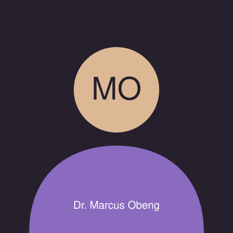
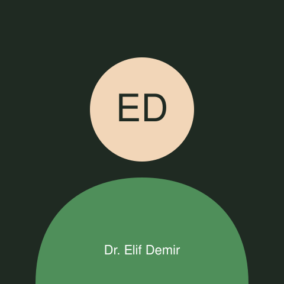

Difficulty breathing, or breathing that has stopped
Chest pain, or pain spreading to the arm or jaw
Heavy bleeding that will not stop
A face, arm or leg that has suddenly become weak or numb
A seizure that will not stop, or a loss of consciousness
Call 999 for an ambulance. Do not wait for an
appointment.
Call 111 today if you need help urgently but it is not life-threatening
Call 111 when you need to be seen
today or overnight and this page has nothing suitable — for example a
high temperature that will not come down, a suspected fracture, or a
worsening infection.
Our own urgent line is
01603 960 111, answered from to
on weekdays. Ring it rather than booking online if your problem
cannot wait for the next available appointment.
What this page is for
Routine appointments: something that has been going on for a while, a
follow-up, a review of long-term medication, a test result you want to
discuss, or a referral you were asked to arrange.
Booking a routine appointment
Routine appointments open eight weeks ahead and are released every
weekday at . A standard appointment is . If you think
you need more time, say so in the form and we will book a double slot
rather than rushing you.
If you arrive more than ten minutes late we will usually have to
rebook you, because the clinic runs to fifteen-minute slots all day and
there is nowhere for the time to come from. Please cancel by the
day before if you cannot attend — a cancelled appointment is nearly always
taken by somebody else within the hour.
Some appointments are handled by
telephone triage: a clinician calls you first, decides with you
whether you need to be seen in person, and books that appointment at the
end of the call. This is not a way of putting you off. It is how we keep
same-day slots free for people who need them.
Our clinicians
鈴木 花子 — Dr Hana Suzuki
Dr Hana Suzuki, general practitioner
Role
General practitioner and partner. At the clinic since 2016.
Specialism
Diabetes, thyroid conditions and long-term medication reviews.
Consults in
English and Japanese.
Sees
Adults and children over five. Runs the Tuesday diabetes clinic.
Dr Marcus Obeng

Dr Marcus Obeng, general practitioner
Role
General practitioner and safeguarding lead. At the clinic since 2019.
Specialism
Respiratory conditions, asthma reviews and smoking cessation.
Consults in
English and Twi.
Sees
All ages, including babies. Runs Thursday home visits.
Dr Elif Demir

Dr Elif Demir, general practitioner
Role
General practitioner. At the clinic since 2023.
Specialism
Women's health, contraception and menopause care.
Consults in
English and Turkish.
Sees
Adults. Runs the Friday morning women's health clinic, which can be
booked directly.
Jo Petersen
Role
Advanced nurse practitioner. At the clinic since 2014.
Specialism
Wound care, blood pressure reviews, vaccinations and minor illness.
Can prescribe.
Consults in
English, and British Sign Language at a conversational level.
Sees
All ages. Most minor illness appointments are with Jo, not a doctor.
Availability
Sessions run 08:00 to 12:30 in the morning and 14:00 to 18:30 in the
afternoon. This is who is in, not what is free — the form below shows real
availability once we have your dates.
Clinician sessions, Monday to Friday. A cell covering both sessions
means that clinician is in all day.
Day
Session
Dr Suzuki
Dr Obeng
Dr Demir
Jo Petersen
Monday
Morning
Bookable
Telephone triage only
Bookable
Bookable, all day
Afternoon
Bookable
Bookable
Not in
Tuesday
Morning
Diabetes clinic, referral only, all day
Bookable
Bookable
Vaccination clinic
Afternoon
Bookable
Bookable
Bookable
Wednesday
Morning
Bookable
Bookable
Not in
Bookable
Afternoon
Telephone triage only
Bookable
Not in
Wound care clinic
Thursday
Morning
Bookable
Home visits, all day
Bookable
Bookable
Afternoon
Bookable
Bookable
Bookable
Friday
Morning
Bookable
Bookable
Women's health clinic
Bookable
Afternoon
Not in
Bookable
Bookable
Telephone triage only
The clinic is closed on bank holidays; call 111 instead. A small
number of same-day appointments is held back each morning and
released at 08:00 by telephone only, never online.
Book an appointment
We reply by your chosen method within one working day, with a confirmed
time. Nothing is booked until you have that confirmation.
New patients
We register anyone living within three miles of the clinic. You do not
need proof of address, an immigration status or an NHS number to
register, and we will not ask for one.
What to bring
Any identity document you have, if you have one
A list of medication you take, including the doses
The name of your previous surgery, if you can remember it
Anything a previous clinician gave you in writing
How to register
Download and fill in the registration form, or ask at reception for a paper copy.
Bring it to reception between 09:00 and 17:00 on a weekday.
A receptionist checks it with you and books a fifteen-minute new
patient check with Jo Petersen.
You can book appointments as soon as the form is handed in, before the
check happens.
The Riverside Walk entrance. Level access from the pavement, automatic
doors, and the accessible parking bays are behind the building.
Riverside Family Clinic
12 Riverside Walk
Norwich NR1 1QQ
United Kingdom
Telephone: 01603 960 100
Urgent line: 01603 960 111
Email: reception@riversideclinic.example
Eight minutes from Norwich railway station: cross Carrow Road bridge,
turn left onto the riverside path, and the clinic is the single-storey
brick building after the boatyard. The path is level and lit.
By bus
Routes 12, 14 and 501 stop on Riverside Road, 150 m away. The stop has
a shelter and a dropped kerb.
By car
Fourteen spaces behind the clinic, including two accessible bays beside
the ramp. Riverside retail park is a five-minute walk if we are full.
Access at the door
Level entry from the pavement, automatic doors, a hearing loop at
reception and an accessible toilet to the left of the waiting area.
Opening hours
Clinic and telephone opening hours
Day
Clinic open
Telephone answered
Monday
08:00 – 18:30
08:00 – 18:30
Tuesday
08:00 – 18:30
08:00 – 20:00
Wednesday
08:00 – 18:30
08:00 – 18:30
Thursday
08:00 – 18:30
08:00 – 20:00
Friday
08:00 – 18:30
08:00 – 18:30
Saturday and Sunday
Closed
Closed
Closed on bank holidays. When we are closed, call 111. In an
emergency call 999 at any time.
Questions patients ask
How far ahead can I book?
Eight weeks. Appointments are released every weekday at 08:00, so if
the date you want is not offered, try again the following morning.
Can I ask for a particular clinician?
Yes, and for anything ongoing we would rather you did — seeing the same
person twice saves a whole appointment of explaining. It usually means
waiting a little longer.
What if I need an interpreter?
Tick the box in the form and tell us the language. We book and pay for
the interpreter. Please do not bring a child to interpret for you.
Can I bring somebody with me?
Always, and you do not need to explain why. Tell us in the form so we
put you in a room with enough chairs.
What happens if I miss my appointment?
Nothing punitive. We will write once to ask whether something got in
the way, because it is usually something we can fix — a reminder by
letter instead of text, or a later time of day.
Who can see what I wrote in the reason box?
Clinical staff and the two receptionists who book appointments. It goes
into your record. It is not shared outside the clinic without your
consent, except where the law requires it.